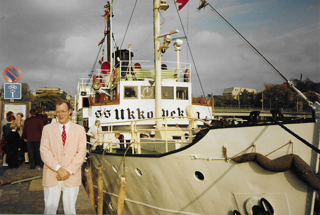
A work trip to Turku in Finland to the wedding celebrations for singer Karita Mattila. My boss, Diana Mulgan, and I jetted off to Turku via Stockholm on 25 September 1992 for a wedding party onboard a ship which took us out to the Finnish Archipelago in the Baltic Sea.
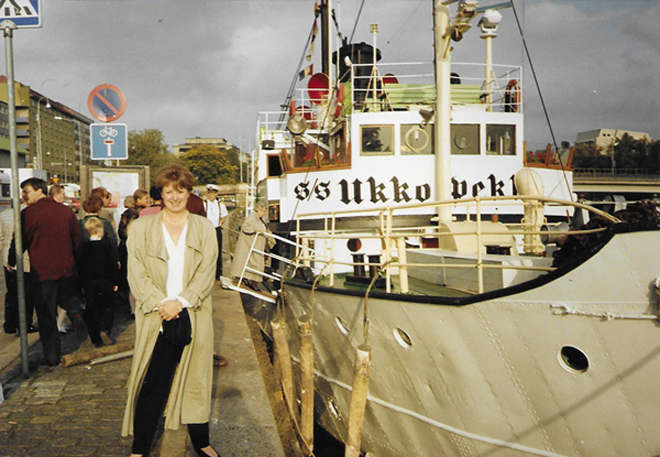
Karita was the winner of the inaugural Cardiff Singer-of-the-World competition in 1981 - and Diana was her manager. Even at the competition, Karita had displayed her love of all things pink ...
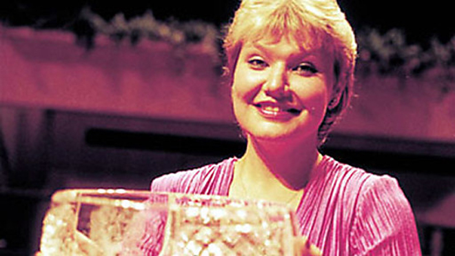
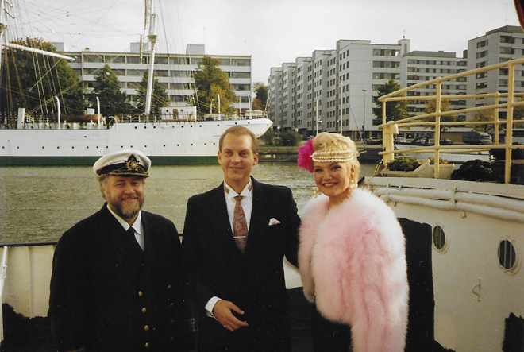
Her wedding outfit also incorporated pink - a pink chicken feather jacket and lots of pearls. Her husband, Tappio, was a used-car salesman who had sold her an upmarket vehicle.
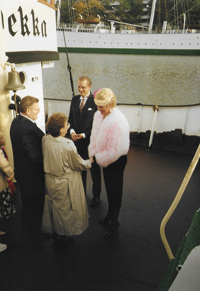
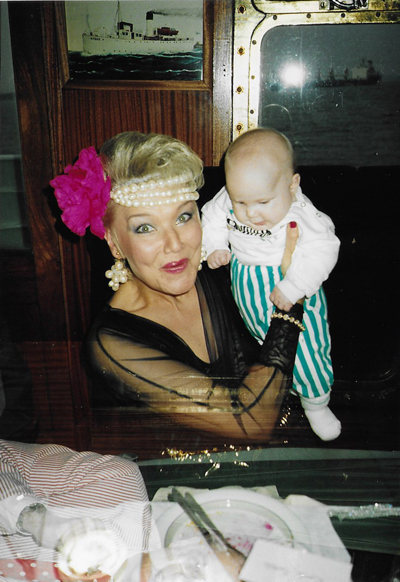
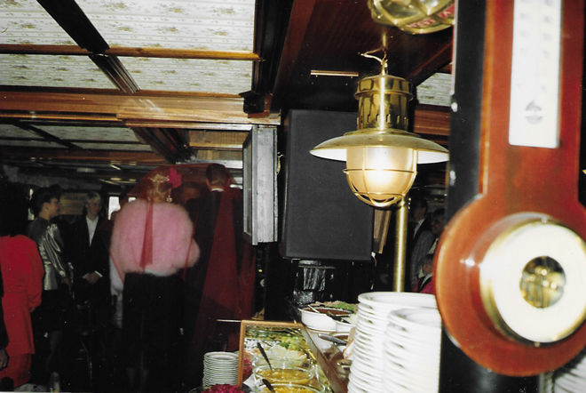
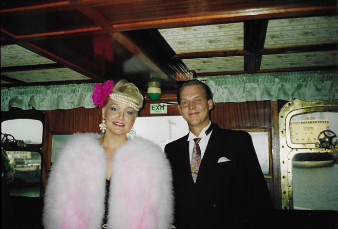
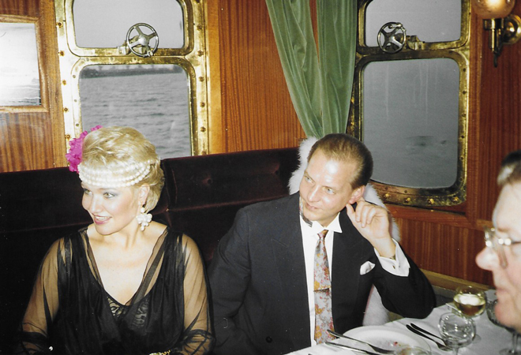
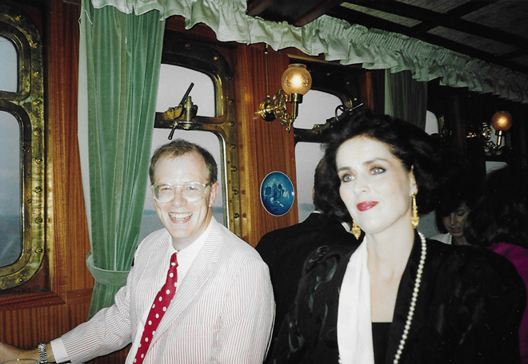
In the middle of the Baltic Sea, the ship moored at a small island covered with snow and ice and we all trooped off the boat to dance on the ice - envigorated by the amount of vodka we had consumed. It was about 10 below zero and my camera rather suffered as, after this stop, the mechanism froze and all later photos were superimposed one over the other. Nothing to do with the vodka though ...
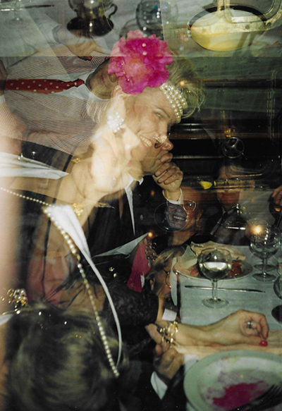
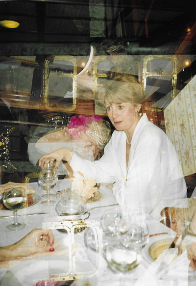
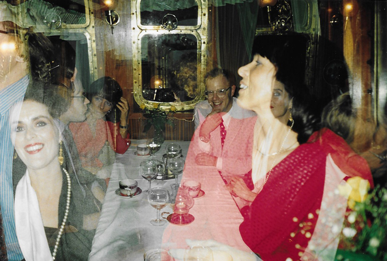